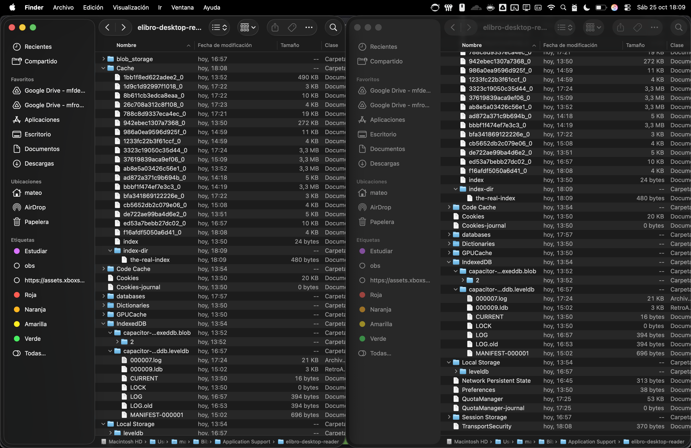
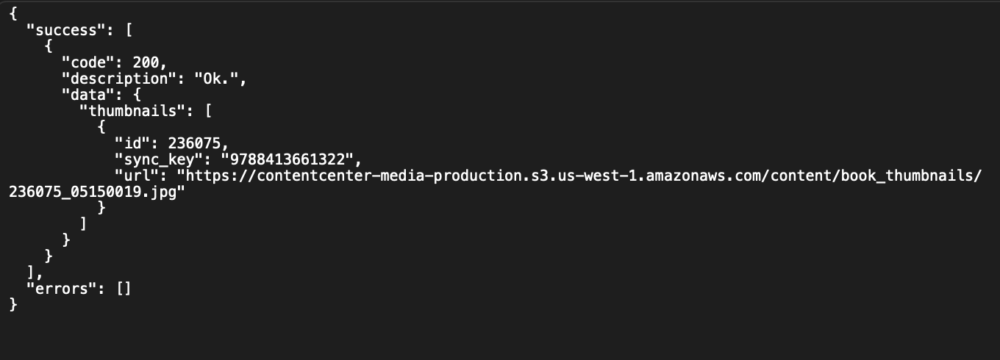

==> Objetivo y Motivación
La motivación En busca de ejercicios para preparar un examen de FMI, entré a la página de Perseo y encontré un libro interesante; que sorpresa la mía cuando resulta que necesito una app propietaria para leerlo. Suponiendo (ilusamente) que no habría nada más que hacer salvo por sacar un archivo y meterlo a DeDRM en Calibre, decidí intentar conseguir el documento para poder leerlo cómodamente en mi tablet y sin límite de tiempo (siendo realista, probablemente lo hubiera tocado 3 veces xd. PERO BUENO).
El objetivo técnico era eliminar la protección DRM de un libro específico (identificado internamente como 97884136613221761405767.pdf) descargado a través de la aplicación eLibro Desktop V1 en macOS, para poder gestionarlo en Calibre u otros lectores más cómodos o compatibles con la tablet.
1. Investigación Inicial: Archivos Locales
- Tecnología: Se identificó (con la bendita ayuda de la inteligencia artificial) que la app usa Electron (JavaScript, HTML, CSS) y almacena datos en bases de datos LevelDB (usadas por IndexedDB y Local Storage).
- Ubicación de Datos: La carpeta principal de datos se localizó en
/Users/usuario/Library/Application Support/elibro-desktop-reader/. - Contenido: Esta carpeta (y sus subcarpetas
IndexedDB,Local Storage, etc.) contenía archivos prometedores por nombre, pero acabaron siendo de configuración y bases de datos, demasiado pequeños (~17 MB). Se concluyó que no contenía el archivo PDF completo del libro (que debería pesar varios MB).

- Pista Falsa (Log): Un log interno mencionaba la ruta
/DOCUMENTS/elibroreader/downloads/3581993.pdf, pero se determinó que era una clave interna de la base de datos, no una ruta real del sistema de archivos. No hayé ninguna otra referencia a esto. - Conclusión Parcial: Los archivos del libro no se almacenan como PDFs simples, están divididos u ocultos en alguna carpeta de difícil acceso, pues el uso de File Find no encontró nada.
2. Hipótesis 1: Extracción de Archivo Temporal
- Suposición: La app extrae y descifra el PDF a un archivo temporal (
.tmpo.pdf) en el sistema cuando se abre el libro. - Método 1 (
fs_usage): Se usósudo fs_usagepara monitorizar la actividad del sistema de archivos mientras se abría el libro.- Se aplicaron filtros sucesivos (
grep -i 'elibro',grep -E "WrData|write",grep "/private/var/folders/",grep -E "(\.pdf|\.tmp)"). - Se identificaron escrituras de archivos temporales llamados
.net.elibro.com.[aleatorio](≈2 MB). - Análisis: Estos archivos resultaron ser librerías nativas (módulos Node.js, probablemente
sqlite3para Electron), no el PDF. Eran una pista falsa. - Resultado:
fs_usageno mostró ninguna escritura a un archivo.pdfo.tmprelevante por parte de la app eLibro.
- Se aplicaron filtros sucesivos (
- Método 2 (
lsof): Se usólsofpara listar los archivos abiertos por los procesos de eLibro mientras el libro estaba visible.- Se identificaron los PIDs correctos usando
ps aux | grep -i elibro. - Se ejecutó
lsof -p [PID] | grep "/private/var/folders/". - Resultado: Solo se listaron los archivos
.net.elibro.com...(las librerías) y más basura. No había ningún archivo PDF o temporal grande abierto.
- Se identificaron los PIDs correctos usando
- Conclusión Hipótesis 1: La aplicación NO escribe el PDF descifrado a un archivo temporal. Probablemente lo descifra directamente en la memoria RAM para mostrarlo.
3. Hipótesis 2: Captura de Red + DRM Estándar de Adobe
- Suposición: El archivo descargado usa el DRM estándar de Adobe, y la clave se puede obtener instalando Adobe Digital Editions (ADE) y corriendo DeDRM con el archivo
activation.datlocalizado en. - Método (Captura): Se usó Proxyman para capturar el tráfico de red.
- Primero devolví el libro en la app, forzando que se desinstale el libro.
- Volví a descargar el libro.
- Buscamos URLs prometedores y... (
mobile-librarian-prod.s3-us-west-1.amazonaws.com/...pdf). - Se guardó el "Response Body" de esa descarga como
pdfcifrado.pdf. Ya tenemos el archivo :)
¡Bingo!
- Método (Intento de Descifrado - Adobe): Ergo... no tenemos el archivo
- Se instaló y autorizó Adobe Digital Editions (ADE) con una cuenta de Adobe ID, que empleaba el mismo correo que la cuenta de eLibro.
- Se intentó descifrar
pdfcifrado.pdfusando la herramienta manualineptpdf.py(parte de DeDRM tools), pasándole el archivo de clave de ADE:python3 ineptpdf.py activation.dat pdfcifrado.pdf pdfdescifrado.pdf - Resultado: El script falló consistentemente con el error
Password invalid.; mierda.
- Conclusión Hipótesis 2: El libro NO usa el DRM estándar de Adobe. Las herramientas DeDRM (Calibre o manuales) no son compatibles.
4. Hipótesis 3: Captura de Red + DRM Propietario de eLibro
- Suposición: eLibro usa su propio sistema DRM. La clave de descifrado debe viajar por la red, probablemente en una respuesta de la API de eLibro.
- Método (Análisis de API): Se re-examinó la captura de Proxyman realizada durante la descarga del libro, importé todo lo que tenía y pasé por encima de unos 20
.jsonhasta encontrar 3 que parecían interesantes. Aunque una fueran metadatos del libro, había 2 con algún tipo de "passkey". Uno parece más importante así que no lo voy a compartir entero, aquí podéis ver como se sincronizan las portadas ("que por cierto no están encriptadas") de los libros:  - El otro... ¿parece Base64?:
"passkey": "TVRjM...[muchísimos caracteres]...9Odz09" - Análisis del
passkey:- Un análisis más detallado (básicamente bombardear a Gemini y ChatGPT, que no se mucho de esto, sigo en primero de carrera :v) reveló que esta
passkey, tras decodificarla de Base64, contenía múltiples partes separadas por;: un timestamp, una dirección IP y un bloque binario (≈78 bytes). - Conclusión Clave: Esta
passkeyNO es la clave AES directamente. Es un token de autorización complejo.
- Un análisis más detallado (básicamente bombardear a Gemini y ChatGPT, que no se mucho de esto, sigo en primero de carrera :v) reveló que esta
- Método (Intento de Descifrado - Script Personalizado): Se crearon varios scripts de Python usando
pycryptodomexpara intentar usar partes de lapasskeydecodificada como si fueran la clave AES y/o el IV/nonce, probando modosAES.MODE_CBCyAES.MODE_CTR.- Resultados: Todos los intentos fallaron. Los errores incluyeron:
-
non-hexadecimal number found(cuando se asumió formato hex).Data must be padded to 16 byte boundary(cuando se usó CBC y el tamaño del PDF no era múltiplo de 16).Nonce is too long(cuando se usó CTR con nonce de 16 bytes).Salida descifrada que no empezaba con %PDF-(cuando se usó CTR con nonce de 8 bytes), indicando que la llave/método seguía siendo incorrecto.
passkey es un token, no la llave AES final. La app eLibro tiene lógica interna (secreta) para procesar este token y derivar la verdadera clave AES.Conclusión
pdfcifrado.pdf) desde Amazon S3.passkey obtenido de la API de eLibro.passkey no es la clave AES final.ineptpdf.py) no funcionan.passkey en la clave AES final, así como los parámetros AES correctos (modo, IV/nonce, padding).app.asar) para encontrar la lógica que procesa la passkey y realiza el descifrado AES. Esto permitiría replicar el proceso en un script personalizado. Me queda grande jeje (por ahora... muejejej )